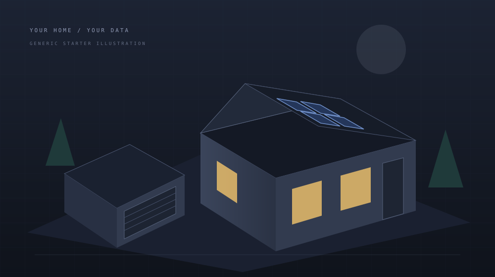

THE BIG PICTURESAMPLE HOME

Built around one useful question.
One place to understand your home.

Site consumption includes the house and garage. Grid exchange is a separate measurement.
House = site − garage. Only derived from meters representing the same sample time. Your adapter must check source freshness and alignment first.
Temperature and compressor frequency share a timeline. This starter does not calculate electrical cost or efficiency from compressor frequency.
Missing readings remain gaps. No readings are interpolated.
Frequency indicates compressor activity. It is not an electrical-power measurement.
| Time | Reading |
|---|